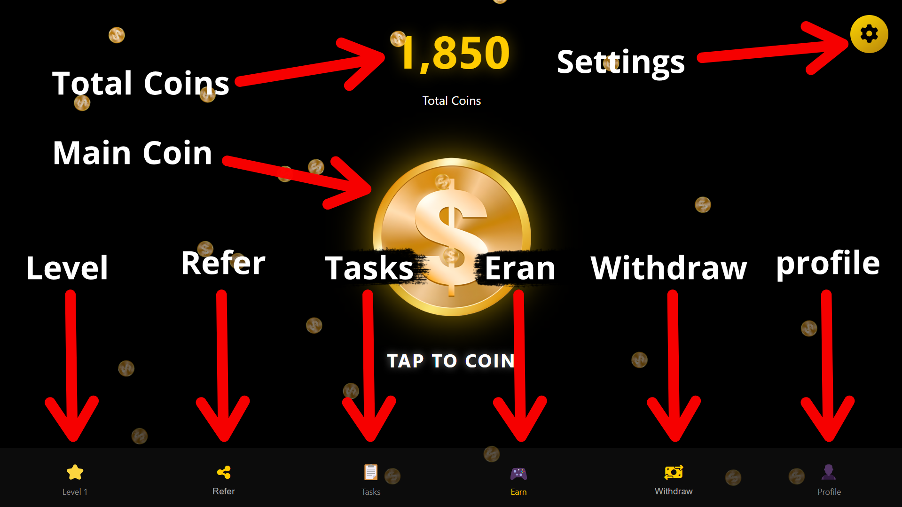

We have used dark theme or dark mode in the main interface of our game.
The main reasons for this are:
(1) Protection of the user's eyes.
(2) Usually gamers look at the screen for a long time! Dark color has been used keeping these things in mind!
Giving other colors can affect the user's eyes! Such as red color, white color, green color and many other types of colors, which directly affect our eyes!
That is why we have used dark background here which directly reduces the effect on the user's eyes and makes the golden color of the coin brighter, and it gives a premium look. Note: We have mentioned some colors here! Which we have also mentioned the reasons not to use. This does not mean that the colors are bad! In fact, the colors are excessively bright and directly affect the eyes, which is why we have not used the colors! You can use them if you want!
which you can't miss if you don't share it! The thing is that inside our game, coins will rain all the time! Just like when it rains, water falls from the sky, coins will rain from the top of our game to the bottom. The reason for using it is: so that the user doesn't get bored while looking at the woman all the time! And so that the user can play our game for a long time and play the game with great pleasure!
The big golden coin in the middle of the interface is the main source of income,
When a user presses or clicks on the big coin,
coins will fall from there.
The interesting thing is that it is not just once, the more times the user clicks, the smaller coins will fall down from the big coin like rain.
This animation will make the user have a lot of fun, which will not let the user get bored and will encourage them to tap on the big coin again and again.
There is a section clearly labeled 'Total Coins' at the top of the screen. Here, the user's earned coins are updated in real-time. The user will instantly see how many coins they are earning after each click, which motivates them to move towards the next goal.
Required Sections
A setting or gear icon is given in the upper right corner,
pressing here will bring up 3 different and required categories or sections in front of the user:
(1) About Section: To know more about the game's goals and procedures.
(2) Contact: A means of contacting us for any need.
(3) Privacy Policy: To ensure transparency about user data and game rules.
If the user enters here, he will know about our game as well as his privacy and can contact us directly if he is in any kind of danger. Which I have kept to serve my users.
There is a star icon at the bottom left of the interface, where 'Level 1' is currently written, this basically reveals the user's game status, the more coins the user collects, the more he can upgrade his level from this section, with each level upgrade, his income per click will increase. Which gives the user the opportunity to earn more coins quickly.
There is an option called 'Refer' in the menu bar, from here the user can copy his own unique referral link, if he invites a friend with this link, that friend will get a bonus as soon as he joins and the inviting user will also get a big reward. This plays an important role in increasing the user network. And everyone will get a chance to play the fun game.
The option has been kept in the game to earn more quickly, here there are some tasks or tasks like watching 9 ads every day, if the user completes these tasks, he gets much more coin bonus than the normal tap, which ensures his fast income. Note: No ads are being shown to the user here. Clicking on the option named Task, the user will be taken to another section, where there is an option named Watch Ad, where the user can click or not click if he wants. And he will not be able to see any more ads than 9 a day!
The Earn option in the menu bar is the home page or main gaming interface of the game, whenever the user is in this option, the user will get the opportunity to tap the big coin and. That is, this is the user's workspace, where he can earn coins over time. And later, he can withdraw those coins through bKash or Rocket. Which will further encourage the user to earn coins, along with their necessary things, they can buy with that money. And they can use them in real life.
the user can withdraw his earned coins directly as money (to BKash or Rocket). Here the minimum withdrawal limit and payment terms are given. If completed, the user will be able to withdraw the coins successfully.
From where the user can check his
(1) own player ID
(2) current level and payment status.
This maintains the credibility and transparency of the account.